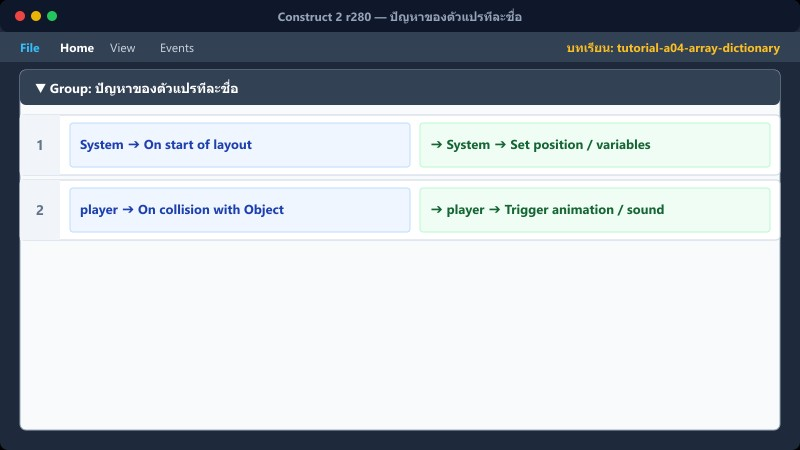
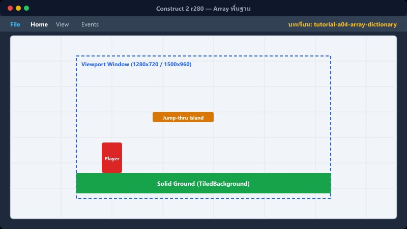
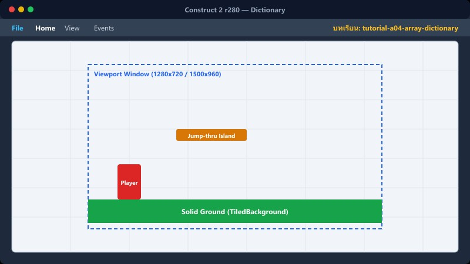
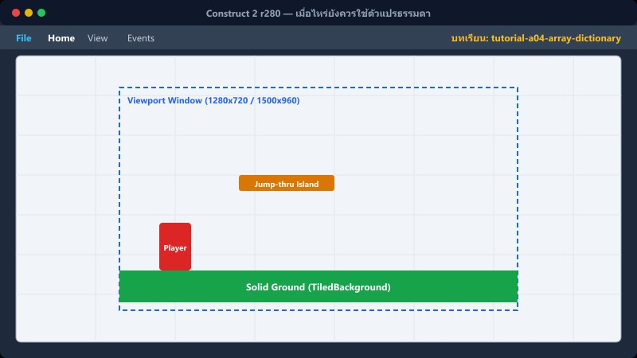

1ปัญหาของตัวแปรทีละชื่อ


ระบบ Top 5 ใน master_v32 แบบปกติจะใช้ตัวแปรชื่อต่างๆ เช่น ชื่อ1, ชื่อ2, ชื่อ3... ควบคู่กับ คะแนน1, คะแนน2... ซึ่งรวมแล้วต้องใช้ถึง 10 ตัวแปร ถ้าเป็นระบบ Top 10 ก็ต้องใช้ 20 ตัวแปร ซึ่งยุ่งยากมาก Array สามารถช่วยแก้ปัญหานี้ได้
📍 ที่ไหนใน C2: ลองสังเกตจำนวน Global Variables เรียงกันยาวเหยียดใน Event sheet ของ Ranking
2Array พื้นฐาน

คุณสามารถสร้าง Array ไว้เก็บคะแนนได้ โดยตั้งชื่อ TopScores ให้มี Width=5, Height=2 (แถว 0 สำหรับคะแนน, แถว 1 สำหรับชื่อ)
Array → Set at X, Y
ดึงค่า: Array.At(X, Y)
สามารถวนลูปใช้งานด้วย Condition For each element ได้
📍 ที่ไหนใน C2: Insert object → Array (กลุ่ม Data & Storage)
3Dictionary

ใช้เก็บข้อมูลแบบ Key-Value คู่กัน เช่น "ผ่านด่าน1" → 1 หรือ "ชื่อผู้เล่น" → "สมชาย"
Dictionary เหมาะมากๆ กับการสร้างระบบบันทึกเกม (เซฟเกม) ลงใน WebStorage เพราะคุณสามารถแปลงข้อมูล Dictionary เป็นรูปแบบ JSON string แล้วเซฟครั้งเดียวจบได้เลย
📍 ที่ไหนใน C2: Insert object → Dictionary
4เมื่อไหร่ยังควรใช้ตัวแปรธรรมดา

ถ้าตารางคะแนนของคุณคงที่แค่ Top 5 ช่อง (เหมือนใน v32) การใช้ตัวแปรธรรมดาก็อาจจะง่ายต่อการทำความเข้าใจกว่า
Array จะมีประโยชน์ที่สุดเมื่อจำนวนช่องสามารถปรับเปลี่ยนได้ตลอดเวลา (Dynamic) ส่วนในเกมเวอร์ชันจริงของ v32 การใช้ ตัวแปรธรรมดา + Dictionary เซฟลง WebStorage ถือเป็นทางเลือกที่ผสมผสานและใช้งานได้ดี
5⚠️ ข้อผิดพลาดที่พบบ่อย

- Array index เริ่มนับจากช่องที่ 0 (ไม่ใช่ 1 ดังนั้นขนาด Width 5 จะมีช่อง 0, 1, 2, 3, 4)
- ลืมตั้งค่าขนาด Width/Height ให้กับ Array ก่อนเริ่มใช้งาน ทำให้ Array ไม่สามารถเก็บข้อมูลได้
- อ้างอิง Dictionary key ผิดเพี้ยน เช่นพิมพ์ตัวพิมพ์เล็ก-ใหญ่ไม่ตรงกัน (Case sensitive)